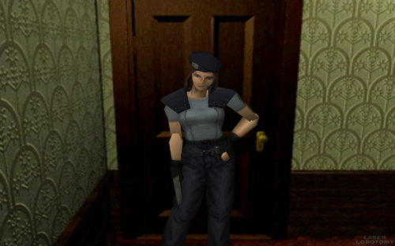
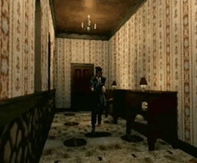

Uno de los juegos mas populares de los 90´s dentro del género del terror y supervivencia y que en la actualidad ha mantenido su fama
alrededor del mundo aparte de haber sido parte de la super nintendo, desarrollado por Capcom y distibuido para la PLAYSTATION, MICROSOFT,
SEGA SATURN Y NINTENDO DS. La cuál ha hecho que en la actulidad muchas personas que estan dentro de la industria de los videojuegos tanto
como empresas grandes e independientes han obtenido inspiración de esta saga de juegos pero sobretodo
desde sus comienzos
Asi que en este artículo hablaremos sobre Resident Evil de que trata este juego, quién o quienes fueron los creadores
y sobretodo tambien nos adeentraremos en su diseño artistico lo cual siempre ha sido caracteristico para la era de la PS1
Resident Evil, cuyo título original en Japón es Biohazard,es un videojuego de terror del subgénero horror de supervivencia desarrollado y
publicado por Capcom. Fue lanzado originalmente para PlayStation en 1996 y es el primer juego de la serie Resident Evil. La trama del juego
sigue a Chris Redfield y Jill Valentine, miembros de una fuerza de élite conocida como S.T.A.R.S., mientras investigan las afueras de Raccoon City
tras la desaparición de los miembros de su equipo. Pronto quedan atrapados en una mansión infestada de zombis y diferentes tipos de monstruos.
Dentro del juego, el jugador, después de haber elegido jugar como Chris o Jill, debe explorar la mansión para descubrir sus secretos.
El juego original transcurre en la noche del 24 de julio de 1998 en las afueras de Raccoon City, concretamente en el área boscosa que rodea la ciudad,
dentro del perímetro de las Montañas Arklay, donde ocurren una serie de extraños asesinatos,
con víctimas cuyos restos muestran indicios de canibalismo. El ayuntamiento local envía al equipo Bravo del grupo de élite de la policía de la ciudad, los S.T.A.R.S.
a investigar estos hechos. Tras perderse el contacto con el equipo Bravo (subtrama relatada en la precuela Resident Evil Zero), se envía al equipo Alpha para encontrarlos
y continuar la investigación.
Concebido originalmente por el productor Tokuro Fujiwara como una nueva versión de su anterior juego de terror, llamado Sweet Home (1989), el desarrollo de Resident Evil fue dirigido por Shinji Mikami. Pasó por varios rediseños: inicialmente fue pensado como un juego para la consola Super Nintendo en 1993, luego como un juego en primera persona totalmente en 3D para PlayStation en 1994, y finalmente como un juego en tercera persona con fondos prerrenderizados. El juego consiste en gran medida en acción en tercera persona con énfasis adicional en gestión de inventario, exploración y resolución de acertijos. Resident Evil estableció muchos elementos que se verían más adelante en la serie, incluido el esquema de control de tanque, el sistema de inventario y de guardado, y el uso de modelos 3D sobrepuestos sobre fondos prerrenderizados. El juego fue muy bien recibido crítica y comercialmente, y a menudo se le atribuye la creación del género survival horror. Fuera del ámbito de los videojuegos, Resident Evil también ha sido destacado por haber contribuido a la popularización de los zombis en la cultura popular desde finales de la década de 1990 en adelante (junto con The House of the Dead), lo que generó un renovado interés en las películas de zombis durante la década de 2000.
Resident evil es caracteristico por tener un método de juego estilo tanque en el cuál, tu control tendra que usar diferentes direcciones de acuerdo al mando en vez de usar el joystick se usaban los controles direccionales para guiar al personaje con dos tiempos en el cuál se guiaba a en cualquiere dirección incluso para la reversa del personaje se tenia que tener en cuenta los cambios de dirreciones, casi como el de un auto pero sin tener el joystick aunque cuando se implemento el joystick en las nuevas versiones de la ps1 podias guiar mejor a tu personaje con esta tecnica y a la vez tener más fluidez al caminar aunque el cambio de camara iba a ser un problema, con joystick te ayudaba a no temer por detenerte aunque te podrias confundir con las direccionales e ir de reversa, aparte algo mas caracteristico aparte de los controles era los escenarios que para un juego de horror y supervivenvcia te hacian adentrarte a la mansión Spencer y a sus cuartos secretos. Los puzzles, acertijos y mecanicas hacian que este juego se mantenga en el primer lugar como juego de horror pero siempre es bueno buscar por si mismo.
